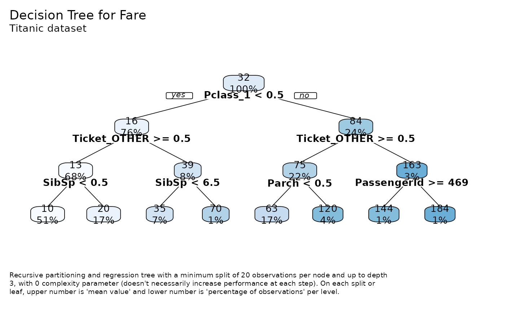
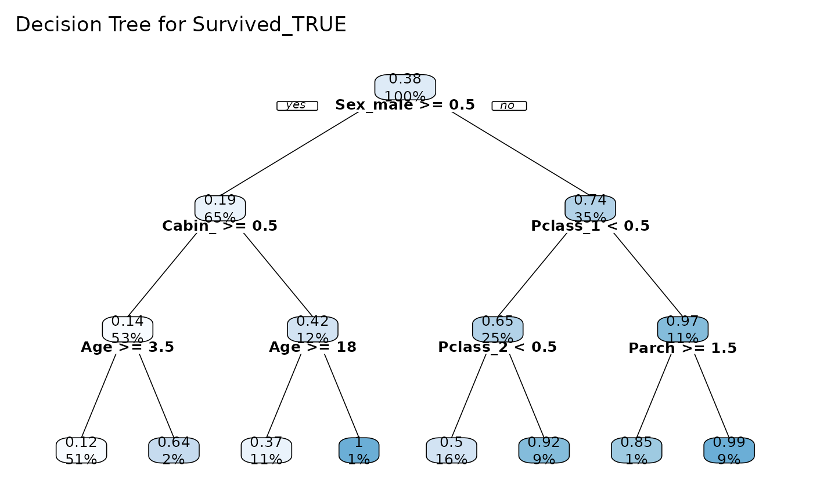
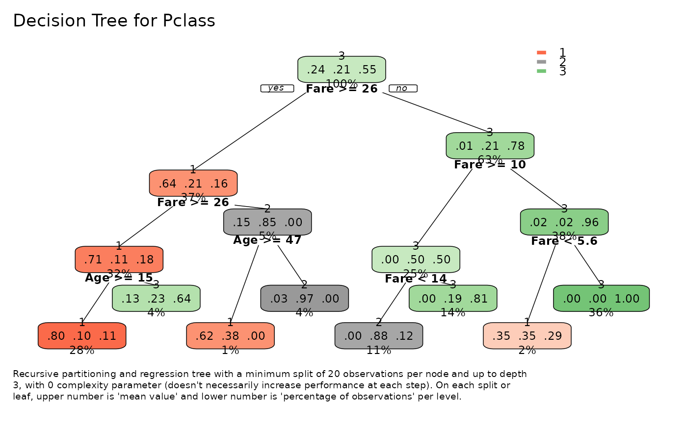

Fit and plot a rpart model for exploratory purposes using
rpart and rpart.plot libraries.
tree_var( df, y, type = 2, max = 3, min = 20, cp = 0, ohse = TRUE, plot = TRUE, explain = TRUE, title = NA, subtitle = NULL, ... )
| df | Data frame |
|---|---|
| y | Variable or Character. Name of the independent variable. |
| type | Type of plot. Possible values: 0 Draw a split label at each split and a node label at each leaf. 1 Label all nodes, not just leaves.
Similar to 2 Default.
Like 3 Draw separate split labels for the left and right directions. 4 Like 5 Show the split variable name in the interior nodes. |
| max | Integer. Maximal depth of the tree. |
| min | Integer. The minimum number of observations that must exist in a node in order for a split to be attempted. |
| cp | complexity parameter. Any split that does not decrease the overall
lack of fit by a factor of |
| ohse | Boolean. Auto generate One Hot Smart Encoding? |
| plot | Boolean. Return a plot? If not, |
| explain | Boolean. Include a brief explanation on the bottom part of the plot. |
| title, subtitle | Character. Title and subtitle to include in plot.
Set to |
| ... | Additional parameters passed to |
(Invisible) list type 'tree_var' with plot (function), model, predictions, performance metrics, and interpret auxiliary text.
This differs from the tree function in S mainly in its handling
of surrogate variables. In most details it follows Breiman
et. al (1984) quite closely. R package tree provides a
re-implementation of tree.
Breiman L., Friedman J. H., Olshen R. A., and Stone, C. J. (1984) Classification and Regression Trees. Wadsworth.
Other Exploratory:
corr_cross(),
corr_var(),
crosstab(),
df_str(),
distr(),
freqs_df(),
freqs_list(),
freqs_plot(),
freqs(),
lasso_vars(),
missingness(),
plot_cats(),
plot_df(),
plot_nums(),
trendsRelated()
Other Visualization:
distr(),
freqs_df(),
freqs_list(),
freqs_plot(),
freqs(),
gg_bars(),
noPlot(),
plot_chord(),
plot_survey(),
plot_timeline(),
theme_lares()
Stephen Milborrow, borrowing heavily from the rpart
package by Terry M. Therneau and Beth Atkinson,
and the R port of that package by Brian Ripley.
#>tree$plot() # tree plottree$model # rpart model object#> n= 891 #> #> node), split, n, deviance, yval #> * denotes terminal node #> #> 1) root 891 2197799.00 32.20421 #> 2) Pclass_1< 0.5 675 107453.20 15.58005 #> 4) Ticket_OTHER>=0.5 602 36951.84 12.77241 #> 8) SibSp< 0.5 454 11332.08 10.27211 * #> 9) SibSp>=0.5 148 14075.24 20.44226 * #> 5) Ticket_OTHER< 0.5 73 26621.89 38.73350 #> 10) SibSp< 6.5 66 19269.25 35.46508 * #> 11) SibSp>=6.5 7 0.00 69.55000 * #> 3) Pclass_1>=0.5 216 1320849.00 84.15469 #> 6) Ticket_OTHER>=0.5 193 1067421.00 74.74652 #> 12) Parch< 0.5 154 626392.20 63.35249 * #> 13) Parch>=0.5 39 342089.30 119.73840 * #> 7) Ticket_OTHER< 0.5 23 92995.43 163.10140 #> 14) PassengerId>=469 12 32097.01 144.27710 * #> 15) PassengerId< 469 11 52007.28 183.63710 *tree$performance # metrics#> $dictionary #> [1] "RMSE: Root Mean Squared Error" #> [2] "MAE: Mean Average Error" #> [3] "MAPE: Mean Absolute Percentage Error" #> [4] "MSE: Mean Squared Error" #> [5] "RSQ: R Squared" #> [6] "RSQA: Adjusted R Squared" #> #> $metrics #> rmse mae mape mse rsq rsqa #> 1 35.09267 14.68424 0.03144996 1231.495 0.5007 0.5002 #># Binary Tree tree_var(dft, Survived_TRUE, explain = FALSE, cex = 0.8)$plot()#>